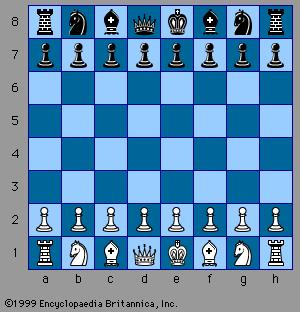

"Chess is a two-player strategy board game played on a chessboard, a checkered gameboard with 64 squares arranged in an 8×8 grid. The game is played by millions of people worldwide. Chess is believed to have originated in India sometime before the 7th century. The game was derived from the Indian game chaturanga, which is also the likely ancestor of the Eastern strategy games xiangqi, janggi, and shogi. Chess reached Europe by the 9th century, due to the Umayyad conquest of Hispania. The pieces assumed their current powers in Spain in the late 15th century; the rules were standardized in the 19th century. Play does not involve hidden information. Each player begins with 16 pieces: one king, one queen, two rooks, two knights, two bishops, and eight pawns. Each of the six piece types moves differently, with the most powerful being the queen and the least powerful the pawn. The objective is to checkmate the opponent's king by placing it under an inescapable threat of capture. To this end, a player's pieces are used to attack and capture the opponent's pieces, while supporting each other. During the game, play typically involves making exchanges of one piece for an opponent's similar piece, but also finding and engineering opportunities to trade one piece for two, or to get a better position. In addition to checkmate, the game can be won by voluntary resignation, and there are also several ways a game can end in a draw."
- The pawn may move by only 1 square in the forward direction. If a pawn is at its starting position, it also has the option of moving 2 squares in the forward direction. If there is a piece of the opposite color in the forward-right or forward-left square of a pawn, it may capture the piece by moving diagonally. It cannot capture a piece in any other manner. If a pawn reaches the last square of the board in any row, it is said to be promoted. The piece is then replaced with either a bishop, a knight, a rook or a queen, depending on the player’s choice.
- The bishop can move diagonally any number of squares (provided they’re not blocked by other pieces) in any of the 2 directions. It can also capture pieces in this manner.
- The rook can move in a linear fashion either vertically or horizontally any number of squares, provided they’re not blocked by other pieces. It can also capture pieces in this manner.
- The knight has the most complicated movements. It can move 3 squares at a time, in a specified order – 2 squares in one direction, either vertical or horizontal, and then 1 square in a different direction, perpendicular to the direction already moved. The knight also has the unique property of being the only piece in chess which can move over other pieces. It can only capture a piece if a piece of the opposite color is present at the final square of the knight’s movement.
- The queen is the most powerful piece. It has the combined movement of the bishop and the rook, and can also capture pieces this way.
- The king can move only one square at a time, but that can be in any direction. However, it can’t move into any square that is directly in the path of any of the other player’s pieces.
Check:
If any of the pieces moves to a square from which it can directly capture the opposite color’s king in the next move, the king is said to be in check. At this time the only moves allowed to this team is to move the king to a safe square, block the path of the piece attacking the king, or capture the piece attacking the king. If none of these 3 alternatives are possible, the king is said to be in checkmate, and when a checkmate is achieved, the team that enforces the checkmate wins the game.
Castling:
Once in every game, each king is allowed to make a special move, known as castling. Castling consists of moving the king two squares along the first rank toward a rook (which is on the player's first rank and then placing the rook on the last square that the king has just crossed. Castling is permissible under the following conditions:
En Passant:
When a pawn advances two squares from its starting position and there is an opponent's pawn on an adjacent file next to its destination square, then the opponent's pawn can capture it en passant (in passing), and move to the square the pawn passed over. This can only be done on the very next move, otherwise the right to do so is forfeit.